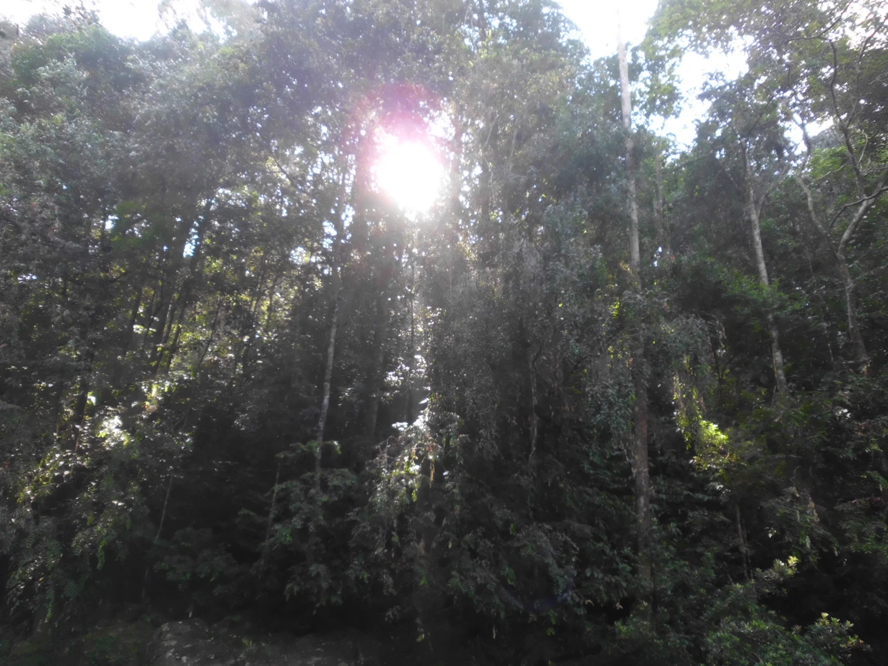
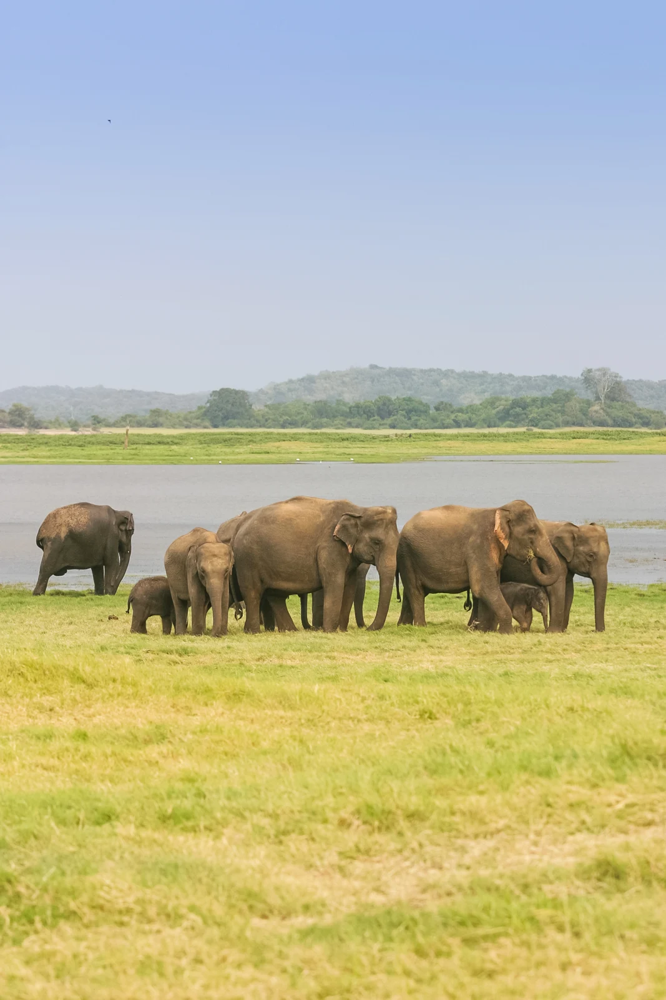

THE NATURE & WILDLIFE JOURNEY
Wild Hearts of Ceylon
Rainforest trails, elephant country, wetlands and the wild southeast.
Make this journey mine ↗CEYLON VOYAGERS / SIGNATURE JOURNEY 04A little more discovery ↓
YOUR TIME8 days
THE FEELNature-focused
THE APPROACHMade flexible
A suggested journey.
Shaped around you.
MOMENTS TO MAKE ROOM FOR
A few reasons to fall for this journey.

Udawalawe habitat experience
Yala landscape & wildlife

Quiet lagoons & shorelines
Images offer a glimpse of Sri Lanka’s landscapes and experiences; individual stops and conditions may differ.
8 DAYS. YOUR KIND OF DISCOVERY.
Every day,
a new perspective.
A day-by-day starting point, with room for the moments you never planned.
01DAY 01Arrival by the coast
Arrive and spend a low-key night near the airport. An easy beach or lagoon walk is optional, with the focus on resting before the nature circuit.
Negombolagoon atmosphereorientation
SUGGESTED NIGHTNegombo
02DAY 02Toward the rainforest
Travel south toward a suitable Sinharaja access point and meet a local nature guide. The route and entry point should be selected with the guide and weather in mind.
Rainforest gatewayvillage landscapes
SUGGESTED NIGHTDeniyaya / Sinharaja gateway
03DAY 03A day in Sinharaja
Explore approved rainforest trails with a knowledgeable guide, looking for birds, butterflies, endemic plants and forest textures. Prioritize a respectful, low-impact visit.
Guided trailbirdliferainforest ecology
SUGGESTED NIGHTDeniyaya / Sinharaja gateway
04DAY 04Rainforest to elephant country
Drive to the dry-zone landscapes around Udawalawe. If schedules fit, consider an educational visit near the Elephant Transit Home before a quiet evening.
Landscape transitionelephant conservation learning
SUGGESTED NIGHTUdawalawe
05DAY 05Udawalawe safari
Take an early or late guided jeep safari through designated park routes. Look for elephants and birdlife while respecting distance rules and natural animal behavior.
Wildlife safarireservoir plainsbirdwatching
SUGGESTED NIGHTUdawalawe
06DAY 06To the Yala region
Continue to the Yala gateway and settle into a safari lodge or hotel area. Keep time for local wetlands or a quiet lakeside visit rather than rushing another full activity.
Tissamaharamawetland sceneryearly rest
SUGGESTED NIGHTTissamaharama
07DAY 07Yala safari and the coast
Take a guided Yala safari, subject to park access and conditions. After a rest, travel to the Tangalle area for a gentle coastal evening; add a Bundala stop only if time and energy allow.
Yala habitatsafari photographycoast
SUGGESTED NIGHTTangalle
08DAY 08Return and departure
Travel from the southern coast toward Colombo or the airport. This is a significant transfer, so build the plan around flight time or add a nearby-airport night.
Coastal returnonward travel
SUGGESTED NIGHTDeparture
Suggested pacing and overnight areas. Day order and stops can change with arrival times, weather, access and your preferred pace.
THE LITTLE DETAILS MATTER
Thoughtfully planned.
Ready to make yours.
This is a flexible trip concept, rather than a confirmed departure or booking. We’ll shape the practical details around your dates and preferences.
Dates & weather
Match the regions and experiences with your travel dates. Beach, surf and wildlife conditions vary across the island.
Access & activities
Attraction access, park blocks, guides, vehicle availability, rail seats and optional activities are confirmed during planning.
Your pace
Climbs, early starts, walking demands and road transfers can be adjusted around your mobility, interests and comfort.
Price & inclusions
No fixed package price, hotel category, meals, guide services or admission tickets are included or confirmed by this outline.
Thoughtful travel
Respect sacred places, communities and wildlife. Animal sightings and sea-based activities are never guaranteed.
YOUR NEXT CHAPTER
This route.
Your rhythm.
Tell us what you love, what you’d change, and when you’d like to go.
FOLLOW ANOTHER FEELING
A different way to see the island.
7 DAYS · SLOW TRAVEL
Saltwater & Slow Days
Discover this journey ↗
10 DAYS · BALANCED DISCOVERY